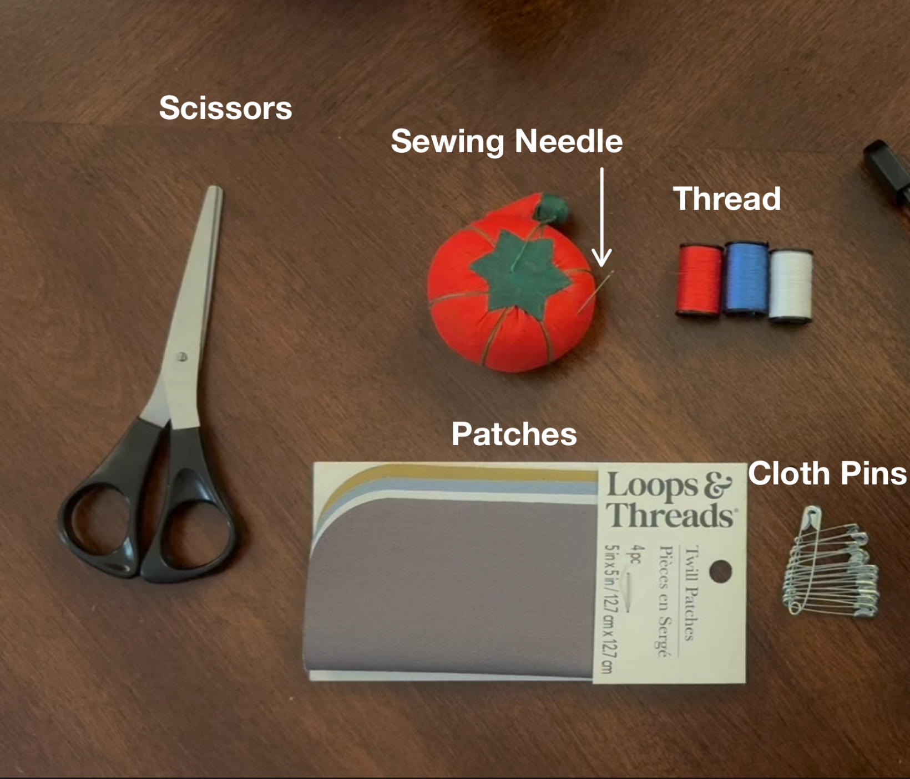

Essential Fabric Repair Tool Checklist
| Tool | Purpose |
| Hand-Sewing Needle | Pushes thread through fabric |
| Matching Thread | Creates a strong repair that blends with the fabric |
| Fabric Scissors | Produces clean cuts |
| Straight Pins | Holds fabric or patches in place |
| Fabric Patch | Covers damaged areas |
 class="- topic/image "/> |